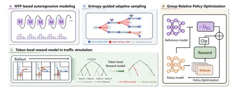

Сегодняшняя статья о том, как адаптировать RL-алгоритм GRPO к задачам автономного транспорта. Авторы проанализировали распределение энтропии для разных сцен и по результатам сформулировали следующее:
1. У сложных сцен (Waymo Hard) более высокая энтропия токенов, поэтому имеет смысл увеличить exploration.
2. В простых сценах (Waymo Easy), наоборот, излишнее семплирование вносит ненужный шум.
Лучше использовать адаптивное семплирование. Авторы предлагают вариант, где параметр K в TopK зависит от энтропии: K_t = k_min + (k_max — k_min) / (1 + e^(-H_t))
Авторы утверждают, что при таком разделении по сложности после RL уменьшается энтропия и улучшаются метрики в hard-кейсах. От себя добавлю, что не хватает ablation, какое распределение энтропии получается после обычного RL.
Отдельного внимания заслуживают выбор параметров и способ обучения:
Таким образом, авторы предлагают подход для эффективного баланса между exploration и exploitation. Предложенный сетап RL выглядит интересно, и некоторые идеи вполне могут работать на практике.
Разбор подготовил
404 driver not found
